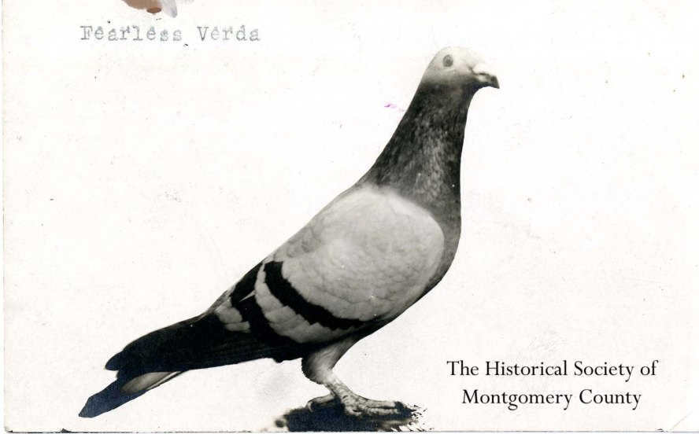

Parisian Pigeons
A Story of Pigeons
in Paris
- Why?
-
Pigeons have had a long relationship with humans, taking on multiple roles and throughout history. Descendant from Rock Doves, the pigeons seen throughout Paris are a mix of wild rock doves, rereleased feral pigeons, pigeons adapted for the urban environment, and some other selectively bred ‘fancy pigeons.’ They are a mix of different subspecies, an eclectic band of characters that sit between multiple spots in our human society. As their current makeup of multiple backgrounds may suggest, pigeons have had mixed roles, and mixed opinions of, during their time in Paris. Pigeons helped protect Parisians during the Franco-Prussian war, flying back and forth as carrier pigeons to get notes out during times of siege. Nowadays, the prevalence of pigeons in the city has created tension between groups again, with some feeding them illegally at night, and others wishing to release falcons and build nests to limit numbers. Currently, the view on pigeons is to see them as a pest
It is clear that pigeons have a nuanced past, one that is quickly being forgotten in the radicalised world of the present. Unique characteristics of the individual are being traded for hateful catch-all terms, traps, and initiatives. Pigeons represent the everyman, the everyday, and a world that remains true but is being marginalised by radical, 'progressive' society that hopes to do away with its past. How do we recognise, collect, remember, and possibly personify this group, as a way of bringing them back as fundamental members of our larger society?
- Le Monument des Aéronautes du Siege
-
If you were to wander by Paris’ Porte des Ternes in the early 20th century, you would have encountered a massive and provocative object: a monument about 30 feet tall, depicting a balloon rising into the sky and surrounded by three pigeons, wings outstretched.
It was clearly an arresting sight. In photos like the one above, pedestrians, bicyclists, and horse-drawn carriage riders cluster around the statue, as if drawn to this more whimsical form of transport. Many may also notice pigeons built into the sculpture. These of course are a small yet obvious reference to the carrier pigeons who helped relay information in and out of Paris during the siege by occupying Prussian forces in 1870.
The pigeons at this time were beloved heroes of the war. Those who successfully completed multiple trips were of high value, and auctioned for much wealth. Several commemorative coins and stamps were produced in France. A city-sponsored memorial contest was run to choose a statue that would honour those who provided Paris with much needed intel from the sky during this time. Although the sculptor of this piece Bartholdi originally came up with his monument in 1878, he didn’t win. The judges instead chose a statue by Louis-Ernest Barrias. It included zero pigeons. Bartholdi’s design lay dormant until the early 1900s, when a group of enthusiasts rose enough money to construct it.
In January of 1906—35 years after the armistice—the completed statue was unveiled at the Porte des Ternes. Barthodli himself would die two years before its completion. The statue itself would only last until the next Germn occupation of Paris – The Nazi’s would melt the statue in 1941.
The statue itself vanishes, taking with it a complex relationship with pigeons that is now mostly lost to the public today. A memento from another time, commemorating the role these birds had with the Parisians, and now dangerously forgotten following the removal by those who opposed the ideals of the ones who created it.
Iconoclasm remains as an important social debate in societies of the 21st century. Many believe that by quenching the ideas of old, we can finally move on towards a more positive future. But the monument lost at Porte des Ternes symbolises the nuance in our history, and the possible dangers of scorch-earth policy when deleting our histories.
- Fly Away Sortie
As the final birds flew past,
Dark silhouettes against my waning eye,
Drifted with drafts of new light.
Orange horizon blurred up
From land to sky to land
Where winged doves carried themselves into
This dreamy passage, allowing
Dusk to flow milkily, it
Showed me new crisp blue air
And I fell right up into it.
I stared into the whole of the sky and,
Kept alight between geography and sun,
Stretched beyond myself, the fingers of my hand
Pulled out over the city, the hills,
so long like feathers
Until they became the finger lakes
I saw below. I was miles long,
I stretched to the sea. To the coast.
To home, where roof tiles are baked red
Like chimneys
And white undies hang as flowers
In the back garden. I blinked,
And the sky had moved on.
I saw no more land nor language
No man nor nation
Nor even the faintest flutter of my own breath
But the flight of wings and perfumed
Dances, the start of song and the
Flap of a bird moving itself towards the
Bright.
- ForrestQuick sketch for a poem I am now developing, part of a series of poems I have been making about dreams and nature a la Ted Hughes and Ovid.
- About this Project
This project is an exploration into storytelling with new conceptions of hierarchy. This is a story about the Pigeons of Paris, a complex one with nuanced relationships with us as humans. It requires a looser, yet still defined way of being told. The design challenge for this project was to create an experience that still gave order to the madness, but allowed for an explorative way of engaging with the many different aspects of pigeons in Paris. There is an arrange of materials I found during research, as well as new materials created by me and fellow designers for this project.
Please enjoy and consume this project how you would like. It is designed for you to step out, step back, and check out another idea before returning to another area. Hierarchy is here to only help condense and streamline information, not categorise or hide it. Please enjoy learning about this misunderstood and integral part of the Paris community as much as I did.
– Forrest
- More – For Class
-
Parisian Pigeons is a digital archive and explorative research project that exists as an evolving documentary on the relationships we have with birds, specifically pigeons in Paris.
I wanted to create a site that uses designed hierarchies to allow for easy movement and exploration, but to not create levels of importance. Rather, design allowed for discovery based on how the audience chooses to explore, not a pre-set narrative.
After discussing last week with you about books vs web, and doing my own research into how web design and more traditional content is organised and consumed, I wanted to create a site that acts similar to an archive, or pile of papers, but with the organisational and simplified navigation that web offers. So as you can see, the site allows us to move quickly between topics, to surf easily, and though you can take deep dives, it is not as easy to become - pigeon-holed.
Working as a group I found that we had different perspectives on Pigeons, as characters, parts of a broader ecosystem, and fascinating animals in and of themselves. In a broader context to this semester, I also found myself questioning the objectiveness of maps and histories during my time in Paris, and wanted to elevate subjective opinions and observations as equally important aspects of research.
The end result is a site I hope to grow, and I actually truly enjoy how it functions. I have made it easy to push deeper and pull out, and have spent a lot of time crafting flows, exits, popups, and break out points to other sites as a way of supporting the explorative experience I hoped to create. Of course, web design and Javascript growth was my primary goal from a skills perspective as a designer this semester, so creating a site that uses JS and CSS to feel active and responsive is something Im proud of.
More
- The Pigeon Post of 1870
-
Inset of a Broadside about balloon events during the Siege of Paris, 1870-1871seen here The Franco Prussian War was a complete failure for the French. Historians today suggest that Bismarck had lead Napoleopn III to declare war on Prussia as a way of unifying the southern German States with those in the north. In any event, within weeks of war commencing, Napoleon was captured, and the Prussians advanced upon Paris, quickly forming a siege.
As had been expected, the normal channels of communication into and out of Paris were interrupted during the four-and-a-half months of the siege, and, indeed, it was not until the middle of February 1871 that the Prussians relaxed their control of the postal and telegraph services. With the encirclement of the city on 18th September, the last overhead telegraph wires were cut on the morning of 19th September, and the secret telegraph cable in the bed of the Seine was located and cut on 27th September. Although a number of postmen succeeded in passing through the Prussian lines in the earliest days of the siege, others were captured and shot, and there is no proof of any post, certainly after October, reaching Paris from the outside.
Route of Pigeons released Millions of letters were carried outwards from Paris by balloon but free balloons could not offer a reliable means of inwards communication since they were at the mercy of the wind and could not be directed to a pre-determined destination. The only option was carrier pigeons. So on September 10, the first carrier pigeons were carried out of Paris by balloon. According to Savelon, 302 Pigeons were flown out of Paris. 59 returned.
Pigeons were initially released upon the balloons landing, and were thus a signal to Paris that the balloon was safely with allies. However, it became evident that Pigeons were more useful as sending new messages back into Paris. The pigeons carried two kinds of despatch: official and private. The maximum weight a pigeon was asked to carry was about 1 gm. Whilst initially written on small sheets of paper, microfilms allowed for pigeons to efficiently carry much more information.
Example of official dispatches
The London Stereoscopic and Photographic Company Jan 1871 souvenir - Paris as Habitat
-

Rock doves sleep in craggy rocks and ciffs in their natural habitat, which make cities ideal locations for nesting and roosting. However, Paris has introduced measures to keep pigeons away from human dwellings.
Combative design such as spikes keep the birds at bay, and specialised nests that allow humans to remove and destroy the eggs have been introduced to the suburbs of the city. Last year, Paris played with the idea of using falcons to hunt pigeons. Because of this, large populations of pigeons roost in the large parks on the periphery of the city.
Section under development
- Paris Against Pigeons
-
Much of the general public, in addition to the city government, has been staunchly anti-pigeon in recent years. It has been reported that pigeon poo leads to annual damages of over 150.000 Euros in Paris alone. The city government and private sector have issued many retaliations to the pigeon 'problem' in Paris.
Thwarting the damages of pigeons often leads to two techniques; obstruction, and de-populising. New laws have been put in place to stop Nourrisseurs from feeding birds, fining them if caught. The result is a community of feeders bringing pigeons food in the dark of the night. Obstructing pigeons from property limits damage from feces and prevents roosting, but does not limit the constantly growing population of birds. The pigeon 'problem' feels like a balloon, as pressure is applied in one area, the air escapes and is found in the other. Thus, population control has been the primary region of reseach and development amongst govermnet officials.
"The pigeon houses allow us to attract the birds to a specific location, by giving them food. Our job is to sterilise a portion of the eggs by shaking them. This way the female broods them for a while, but then rejects them. A pigeon lays eggs several times a year, generally in the same pigeon house. We try to protect the first round of eggs, and the rest are sterilised. I also take care of the pigeons, keeping them sanitary, cleaning up their droppings."
- Cedric Gendry, Department of Pigeon House Regulation and Maintenance (SREP)
However, these structures can only hosue so many birds, which continue to grow in numbers. In recent years, local governments have been trying more agressive plans...
"We tried traditional methods and now we are doing something more radical," a spokesman for the town hall of the 10th arrondissement told The Local.com in 2017. "Paris pigeons are not used to birds of prey," he said, which the town hall hopes will make the plan a success.
The design of creating obstructions to pigeons is something that is often selected in aggressive design towards the homeless or underprivileged. It is interesting to note that there is a shared response from the city government to both birds and ‘unwanted humans,’ creating a situation that obviously dehumanises certain human populations, but also shows the level of design instigated to stop the birds. It would be interesting to conduct further research into which practice informs the other; pigeon design applied to humans, or visa versa. The chicken and the egg.
- Pigeons Against Paris
-
Section under development
- Flight Mode
-
Can I Have Wings?Pigeons have had a long relationship with humans, taking on multiple roles and throughout history. Descendant from Rock Doves, the pigeons seen throughout Paris are a mix of wild rock doves, rereleased feral pigeons, pigeons adapted for the urban environment, and some other selectively bred ‘fancy pigeons.’ They are a mix of different subspecies, an eclectic band of characters that sit between multiple spots in our human society. As their current makeup of multiple backgrounds may suggest, pigeons have had mixed roles, and mixed opinions of, during their time in Paris. Pigeons helped protect Parisians during the Franco-Prussian war, flying back and forth as carrier pigeons to get notes out during times of siege. Nowadays, the prevalence of pigeons in the city has created tension between groups again, with some feeding them illegally at night, and others wishing to release falcons and build nests to limit numbers.
Moi j'vous ai dit les pigeons de paname il prenne la confiance ces fdp ils prennent les transports en communs oklm pic.twitter.com/HGs6knRln6
— BDE | Roberto (@arobazemoi) October 25, 2015En 2010, tu marchais à côté d'un pigeon il s'envolait, en 2014, il te regarde de travers limite c'est toi qui doit t'envoler.
— Tweet du jour (@Tweetdujour_) June 3, 2018"In 2010, you were walking next to a pigeon he was flying, in 2014, he looks at you wrongly, it's up to you to fly"
- Nourrisseurs
-
He has been feeding pigeons for years outside of Centre Pompidou.
Under French law, it is illegal to feed pigeons in Paris, with the penalty being a 450€ fine.
His wherabouts remain unknown.
Section under development
- Pigeon Biset (columba livia)
-
The words “pigeon” and “dove” are synonymous, which explains how the domestic pigeon’s fore-bearer is species referred to as anrock dove (Columba livia), found natively on rough outcrops in Asia and North Africa. Many of the world’s other 340 or so species of pigeon are serious migrators, but rock doves seldom travel more than 30km between seasons and most remain in the same region. So it is a wonder as to why domesticated rock doves, homing pigeons, have been able to cross 600km or more of unknown country. Homers are bred to excel, but no one has been able to breed a parrot or canary or duck that returns, so pigeons’ basic skill set can’t be put down to human breeding. They themselves are incredible birds.
Pigeons were domesticated thousands of years ago, long before chickens or ducks, making them the bird by which we have the longest relationship. They were first domesticated for eating. Biologists testing the birds’ homing abilities have found they’re able to navigate by evaluating landscape smells, the position of the sun, the Earth’s magnetic field, the pattern of highways, and probably infrasound. Domestic pigeons in experiments have distinguished letters of the alphabet, different emotions on human faces, paintings by Picasso and Monet, even breast cancer tumours on scans. They have truly well-developed minds.
Due to this, it is no wonder that such a sophisticated animal decides to dwell with other advanced beings in urban centres. Apartment buildings provide roosting opportunities similar to their native environments, but attempts to thwart their growth in urban areas has led many pigeons to roost in nearby parks.
The pigeons we see today are a mix of families leaving the nest and coming together. On one hand is the naturally-occurring rock dove, or Columba livia. Domesticated versions of this animal are known as Columba livia domestica, and are examples of pigeons being bred for food, racing, and homing. Escaped populations are referred to as feral pigeons in scientific circles, and represent an interbreeding between wild and domesticated birds. These are urban natives, and flourish in cities like Paris.
Pigeons today are thus the result of a consistent yet nuanced relationship with humans, and a natural ability to adapt as a highly-developed species.
- Darwin Coming to Town
-
How cities create new species
Places where human activity reaches fever pitch abound with exotic species. These urban ecosystems are formed not by ages of evolution or the slow colonisation by species under their own steam and of their own choice, but by human diligence alone. And that human urbanisation has had a sometimes surprising impact on the behaviour of animals.
The impact of cities is not just evident in the behaviour of animals – urbanisation has also changed the course of animal evolution.
Researchers in the US found that the wingspan of American cliff swallows, which took up the habit of colonising concrete highway bridges in the 1980s, had decreased by about two millimetres a decade since then. Not much, and perhaps not really worth noticing if their measurements on the roadkill had not shown the exact opposite pattern: by the 2010s, the wings of dead birds by the roadside were about half a centimetre longer than those of live birds still happily flapping along. Also, even though the pressure of traffic had remained the same or even increased, the numbers of dead birds declined by almost 90%.
The shape of a bird’s wing is not something that evolution can mess with with impunity. It is very closely wedded to a bird’s way of life. Long pointed wings are better for fast flying in a straight line, while short rounded wings are good for making rapid turns or for quickly taking off.
The conclusion was inescapable: only cliff swallows with wings short enough to take off vertically from the tarmac to escape an oncoming car had managed to get away and spread their short-wing genes in the gene pool. The tardier long-winged ones ended up as ex-swallows on the hard shoulder, their long-wing genes excluded from the pool. And, as the surviving swallows became ever better adapted at evading approaching vehicles, the number of casualties plummeted.
Read more at The Guardian
- Further Reading
-
Learn more about pigeons and their relationship to Paris.
Who
- Pigeons of Paris
-
Pigeons in Paris have had a longstanding relationship with us as humans. Our understanding of them is oftentimes backed in cultural and political contexts. Pigeons are commonly seen in contemporary times as pests, and treated as invaders and outsiders. Yet our common history offers an opportunity to personify and thus connect with this community, and possibly see them as necessary and important parts of our past and present.
More to Come. Illustrations by Carly W. Blumenthal
- Pigeons of Sport
-
Heroes of the Montgomery Country Pigeon Racing (USA).
- Red Boy
-
- Fearless Verda
-

- UNDEFEATABLE
-
.
- Hendricks Boy
-
- Opal
-

- Pigeons of War
-
Pigeons have a rich relationship with Parisians from the 1870 Franco-Prussia War, but they have playes a large role in conflicts since...
- Passchendaele
-
Pigeons were kept in a number of places, including planes or tanks. Here a British soldier prepares to 'throw' a pigeon from a tank in 1918 at the Third Battles of Ypres.
- Pigeon Recon
-
Example of pigeon reconaissance imagery used by Triple Alliance and Entnete powers alike.
- Pigeons of WWII
-
When medals were handed out in Britain after World War II, two recipients were Australian pigeons, lauded for “conspicuous gallantry”. Each had saved soldiers in New Guinea by carrying pleas for aid. One, known as Q, survived heavy fire to carry a message that saved 200 Americans on Manus Island. The other relayed an SOS message from an army boat stranded in Huon Gulf during a savage storm, saving craft, crew and cargo.
They were part of the Australian Corps of Signals Pigeon Service, which operated along the Kokoda Trail and elsewhere in New Guinea. Australia’s pigeon fanciers donated more than 13,000 birds to the war effort. Australia honoured them decades later when they appeared on $1 coins put out by the Royal Australian Mint in its Unlikely Heroes Series.
- Pigeons that are
cousins of pigeons -
Charles Darwin was enthusiastic about pigeons because the variety of breeds produced by fanciers and breeders, as well as the wealth of species he obseerved during his time in Australia and New Guinea lent support to his theory of evolution.
The following images were taken by Leila Jeffreys for her series Ornithurae Volume 1.
It should be noted that these species are naturally ocurring ones, and not the result of urbanisation or human breading, phenomena that has resulted in doves with much closer relationships to humans, such as the feral pigeon and the carrier pigeons discussed on this site. Still, these portraits portray these winged rats intimately as objects of beauty and as biologist Alfred Russel Wallace put it, arrousing organisms that have "achieved their maximum development, as regards beauty, variety, and number of species"
- Nicobar Pigeon
-
- Crested pigeon
-
- Bleeding-heart Dove
-

- Topknot Pigeon
-

- Wompoo Pigeon
-
- Squatter Pigeon
-
- Rose-crowned Fruit Dove
-
- Emerald Dove
-
- Superb Fruit Dove
-
- Wonga Pigeon
-
- Peaceful Dove
-
-
-
-
Editorial manager: Gauthier Roussilhe
Address: 62 Wood’s Rd, SE15 2SW London
Email: contact@ethicsfordesign.com
Website: ethicsfordesign.comHosting: Linode
Address: 329 E. Jimmie Leeds Rd, Ste. A Galloway, NJ 08205
Website: linode.comWeb development: Sylvain Julé
Website: sylvain-jule.fr

{kind=link}
{kind=link}